Trong chương này, chúng ta sẽ thiết lập nền tảng cho công việc hạ tầng của mình. Chúng ta sẽ bắt đầu bằng việc thiết lập một tài khoản Amazon Web Services (AWS). Sau đó, chúng ta sẽ thiết lập một công cụ gọi là pipeline tích hợp liên tục và phân phối liên tục (CI/CD) để tự động hóa các thay đổi hạ tầng. Với những công cụ này, chúng ta sẽ có thể định nghĩa và cấp phát hạ tầng microservices xuyên suốt cuốn sách.
Trước đó, trong Chương 2, chúng ta đã thiết lập một nhóm nền tảng chịu trách nhiệm cung cấp hạ tầng microservices. Chúng ta quyết định rằng nhóm này sẽ cung cấp hạ tầng dưới dạng dịch vụ. Điều đó có nghĩa là các nhóm khác phải có thể sử dụng hạ tầng theo cơ chế tự phục vụ mà không cần phối hợp quá nhiều với nhóm nền tảng. Để kích hoạt mô hình “as a service” cần có một khoản đầu tư ban đầu. Đó chính là điều mà các công cụ trong chương này sẽ giúp giải quyết.
Để giảm khối lượng công việc mà các nhóm microservices cần làm, chúng ta sẽ phải khiến việc chuyển mã từ máy trạm cục bộ lên một hạ tầng được lưu trữ trở nên dễ dàng. Vì vậy, chúng ta cần hạ thấp rào cản để các nhóm có thể cấp phát môi trường và triển khai dịch vụ của họ lên một hệ thống được lưu trữ. Chúng ta cần khiến việc tạo một môi trường mới trở nên rẻ và dễ, đồng thời cung cấp đúng bộ công cụ để việc phát hành an toàn và thuận tiện.
Trên thực tế, đạt được những mục tiêu đó là điều khó khăn nếu bạn không có cách tốt để cải thiện cách bạn thay đổi chính hạ tầng. Nếu chúng ta có thể giảm chi phí công sức để xây dựng và thay đổi hạ tầng, chúng ta sẽ có thể cung cấp môi trường mới dễ dàng hơn và tập trung nhiều hơn vào việc cải thiện hạ tầng nhằm đáp ứng các mục tiêu hệ thống của mình.
May mắn là chúng ta không phải tự mình phát minh ra một giải pháp cho các thay đổi hạ tầng. Chúng ta có thể tận dụng các nguyên tắc và triết lý của DevOps. Cụ thể, việc sử dụng các thực hành DevOps như infrastructure as code (IaC), CI và CD sẽ giúp chúng ta đạt được các mục tiêu của mình. Chúng ta sẽ có thể thực hiện các thay đổi hạ tầng nhanh hơn, rẻ hơn và an toàn hơn, đồng thời mở rộng quy mô công việc xây dựng môi trường trên khắp các nhóm microservices.
Mục tiêu của DevOps là theo đuổi việc cải thiện cách phần mềm được phát triển, phát hành và hỗ trợ. Việc hướng tới mục tiêu đó có thể trải rộng trên các lĩnh vực như thiết kế tổ chức, văn hóa, quy trình và công cụ. Phong cách kiến trúc microservices cũng chia sẻ một mục tiêu tổng thể tương tự, nhưng bổ sung thêm đặc tính các dịch vụ có ranh giới rõ ràng và được triển khai, quản lý độc lập. Microservices và DevOps song hành cùng nhau; trên thực tế, sẽ cực kỳ khó khăn để xây dựng ứng dụng theo phong cách microservices nếu không áp dụng các thực hành DevOps.
Việc áp dụng các thực hành DevOps có nghĩa là chúng ta được tận dụng một hệ sinh thái công cụ phong phú cho quản lý mã, quản lý build và phát hành. Sử dụng các công cụ này sẽ giúp giảm đáng kể thời gian để đưa giải pháp hạ tầng của chúng ta vào vận hành. Đến cuối chương này, chúng ta sẽ thiết lập được một chuỗi công cụ chạy trên đám mây mà chúng ta có thể dùng để xây dựng hạ tầng microservices. Chúng ta sẽ có một repository IaC, một tệp khởi đầu cho mã hạ tầng, một pipeline để kiểm thử và build (xem Hình 6-1), cùng một nền tảng đám mây mà bên trong đó chúng ta có thể xây dựng các môi trường.
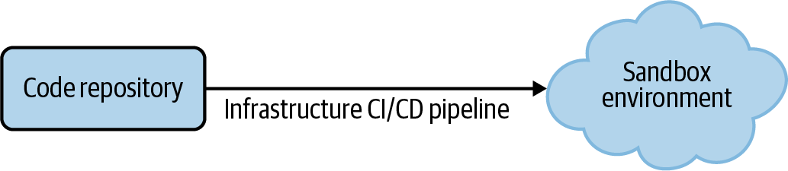
Nhưng trước khi bắt đầu xây dựng pipeline, hãy cùng xem qua các nguyên tắc và thực hành dựa trên DevOps mà chúng ta đã dùng để định hướng thiết kế.
Xây dựng phần mềm theo cách của DevOps giúp bạn giảm thời gian cần để thực hiện các thay đổi đối với ứng dụng mà không làm phát sinh thêm rủi ro. Khi làm đúng, nó mang lại cho bạn cả tốc độ thay đổi lẫn độ an toàn của thay đổi cùng một lúc.
Đó chính xác là lợi ích mà chúng ta muốn cung cấp với chuỗi công cụ hạ tầng của mình. Nếu chúng ta có thể cải thiện tốc độ và độ an toàn của các thay đổi hạ tầng, chúng ta có thể thực hiện được nhiều thay đổi hơn. Chúng ta cũng sẽ có thể tạo ra nhiều cải tiến hơn với tần suất cao hơn và cung cấp một dịch vụ nền tảng tốt hơn cho các nhóm microservices.
Để làm được điều đó, chúng ta sẽ sử dụng ba khái niệm từ thế giới DevOps trong nền tảng hạ tầng của mình:
Hạ tầng bất biến
IaC
CI và CD
Hãy xem xét chi tiết từng ý tưởng này để hiểu chúng sẽ giúp chúng ta như thế nào, bắt đầu với nguyên tắc hạ tầng bất biến.
Một đối tượng là bất biến nếu nó không thể bị thay đổi sau khi được tạo ra. Cách duy nhất để cập nhật một đối tượng bất biến là hủy nó đi và tạo một đối tượng mới. Những thứ bất biến chứa các hành vi và cấu trúc dễ dự đoán và tái tạo hơn vì chúng không thay đổi. Ví dụ, trong lập trình, một kiểu dữ liệu bất biến sẽ cho phép bạn gán giá trị khi nó được tạo ra nhưng không bao giờ cho phép bạn thay đổi giá trị đó. Nếu bạn tạo một kiểu dữ liệu tên là x với giá trị là 10, bạn có thể chắc chắn rằng nó sẽ luôn là 10 mãi mãi. Tính dễ dự đoán này có thể khiến các hoạt động như kiểm thử và sao chép những đối tượng này
trở nên dễ dàng hơn.
Nguyên tắc hạ tầng bất biến là việc áp dụng tính bất biến này lên các thành phần hạ tầng. Giả sử chúng ta thiết lập và cài đặt một network load balancer với một tập các tuyến đã được định nghĩa. Nếu áp dụng nguyên tắc bất biến, các tuyến mạng mà chúng ta đã định nghĩa sẽ không thể thay đổi nếu không hủy load balancer đó và tạo một load balancer mới.
Lợi thế chính của việc áp dụng tính bất biến ở đây là tạo ra những hệ thống hạ tầng có thể dự đoán và tái tạo dễ dàng. Trong các hệ thống truyền thống, operator phải làm rất nhiều công việc thủ công để duy trì hệ thống hoạt động. Họ vá hệ thống, điều chỉnh cấu hình, dừng và khởi động các tiến trình. Máy chủ và thiết bị được giữ cho chạy liên tục, còn operator sẽ “nắn” môi trường để ứng dụng có thể chạy được. Khi có nhiều môi trường và máy chủ, operator cần “nắn” tất cả chúng.
Nhưng theo thời gian, khi ngày càng có nhiều thay đổi được áp dụng (thường là không nhất quán), trạng thái của các hệ thống này bắt đầu trôi lệch. Việc giữ cho tất cả các máy chủ luôn ở cùng một trạng thái trở nên ngày càng khó khăn. Đưa thêm máy chủ mới vào hoặc thay đổi trạng thái môi trường trở thành một vấn đề do sự biến thiên và khó đoán đó. Sự khó đoán này đồng nghĩa với việc cần nhiều chuyên môn và công sức thủ công hơn, khiến tốc độ cung cấp chậm lại và làm cho việc cung cấp nền tảng hạ tầng dưới dạng một công cụ tự phục vụ trở nên khó khăn như chúng ta đã vạch ra trong mô hình vận hành.
Đó là lúc hạ tầng bất biến phát huy tác dụng. Bằng cách áp dụng nguyên tắc bất biến, chúng ta có thể tạo ra một hạ tầng có tính dự đoán cao và dễ sao chép. Điều này rất phù hợp với mô hình mà chúng ta đang nhắm tới. Vì vậy, hãy biến đó thành quyết định then chốt đầu tiên cho nền tảng hạ tầng của mình.
Quyết định mà chúng ta vừa đưa ra đi kèm với một đánh đổi: chi phí của việc hủy và tái tạo cấu hình. Vì vậy, chúng ta sẽ cần đưa ra thêm một số quyết định để làm cho quá trình này dễ dàng hơn. Nếu không, chúng ta sẽ rơi vào tình huống chẳng bao giờ thay đổi hạ tầng vì việc đó quá khó và quá tốn kém. Quyết định đầu tiên sẽ là điều mà chúng ta đã ám chỉ từ trước trong cuốn sách. Chúng ta sẽ xây dựng nền tảng của mình trên đám mây.
Quyết định xây dựng hạ tầng microservices của chúng ta trên đám mây là một yếu tố kích hoạt quan trọng cho hạ tầng bất biến. Nếu không có nó, chi phí mua sắm phần cứng vật lý, quản lý máy chủ và mua phần mềm sẽ khiến chúng ta chìm trong sự phức tạp và chi phí. Nhưng trên đám mây, các thành phần hạ tầng là ảo. Với tính ảo hóa đó, chúng ta có thể đối xử với hạ tầng giống như cách chúng ta đối xử với phần mềm. Nó cho chúng ta tự do tạo và hủy máy chủ, thiết bị theo cách tương tự như với một thành phần phần mềm hay một đối tượng trong hệ thống hướng đối tượng.
Hạ tầng bất biến sẽ giúp chúng ta tránh hiện tượng trôi lệch cấu hình máy chủ và cải thiện khả năng sao chép, khởi tạo các môi trường mới với trạng thái gần giống môi trường sản xuất. Tuy nhiên, chúng ta vẫn sẽ cần một cách để định nghĩa toàn bộ hạ tầng bằng một tập cấu hình có thể quản lý được. Đó là nơi nguyên tắc IaC có thể giúp ích.
IaC dựa trên một ràng buộc mạnh mẽ duy nhất: mọi thay đổi hạ tầng phải được biểu diễn dưới dạng một tập các tệp (hoặc mã) mà máy có thể đọc. Các nhóm áp dụng ràng buộc này có thể chỉ vào một nhóm tệp xác định trạng thái đích của hạ tầng, và có thể tái tạo một môi trường bằng cách áp dụng lại phần mã đã tạo ra nó. Quản lý mã hạ tầng trở thành một cách quản lý trạng thái hạ tầng. Cuối cùng, việc áp dụng nguyên tắc IaC có nghĩa là chúng ta có thể quản lý thay đổi đối với các môi trường bằng cách quản lý cách chúng ta viết, kiểm thử và triển khai mã hạ tầng của mình.
IaC cũng rất quan trọng đối với việc kích hoạt hạ tầng bất biến của chúng ta. Tính bất biến đòi hỏi chúng ta phải quản lý các định nghĩa cho đối tượng để chúng có thể được thay đổi thông qua việc tái tạo. Có nhiều cách để làm điều đó, nhưng IaC cho phép chúng ta đối xử với hạ tầng theo cách chúng ta đối xử với ứng dụng. Với IaC, việc tạo và thay đổi thành phần tương tự như chạy một chương trình. Chúng ta sẽ có thể áp dụng những hiểu biết của thế giới phát triển ứng dụng vào hạ tầng.
IaC rất phù hợp với hệ thống mà chúng ta đang cố xây dựng, vì vậy hãy chính thức hóa quyết định này bằng một ADR.
Để bắt đầu với cách tiếp cận IaC, chúng ta sẽ cần một công cụ cho phép định nghĩa các thay đổi muốn thực hiện dưới dạng tệp mã mà máy có thể đọc. Công cụ đó cũng cần diễn giải các tệp IaC của chúng ta và áp dụng chúng lên môi trường đích. Nhiều năm trước, có lẽ chúng ta phải tự xây bộ công cụ này, nhưng hiện nay đã có rất nhiều công cụ có thể làm công việc đó giúp chúng ta. Đối với dự án ví dụ của mình, chúng ta sẽ dùng Terraform của HashiCorp để định nghĩa các thay đổi và áp dụng chúng vào môi trường đám mây của mình.
Terraform là một công cụ phổ biến dành cho các nhóm đang áp dụng nguyên tắc IaC và quản lý hạ tầng của họ theo cách tự động, có thể lặp lại. Chúng tôi đã có kinh nghiệm tốt khi dùng Terraform trong các dự án của mình, và khảo sát nhanh từ giới thực hành cũng cho thấy đây là lựa chọn phổ biến của nhiều người triển khai khác. Trong mô hình này, chúng ta đã chọn dùng Terraform làm công cụ cho các thay đổi hạ tầng, vì vậy hãy bắt đầu bằng cách ghi lại quyết định đó.
Terraform không phải là công cụ duy nhất có thể giúp chúng ta xử lý các thay đổi hạ tầng và hiện cũng có rất nhiều lựa chọn thay thế phổ biến. Chúng ta chọn Terraform vì nó áp dụng cách tiếp cận khai báo cho quản lý hạ tầng. Nhờ vậy, chúng ta có thể khai báo trạng thái đích của hạ tầng và Terraform sẽ làm phần việc khó khăn để biến điều đó thành hiện thực. Điều này khá khác với các cách tiếp cận quản lý cấu hình truyền thống, nơi chúng ta cần chỉ dẫn cho công cụ từng bước mệnh lệnh một.
Terraform cũng chấp nhận nguyên tắc hạ tầng bất biến mà chúng ta đã quyết định áp dụng trước đó. Trên thực tế, điều này cho phép chúng ta viết mã Terraform mô tả trạng thái mong muốn của một thành phần hạ tầng. Khi áp dụng mã, Terraform sẽ làm phần việc khó khăn là hủy và tái tạo thành phần đó ở dạng mới của nó. Việc này bao gồm cả xử lý các đối tượng phụ thuộc và hủy rồi tái tạo chúng nếu cần.
Để “phép màu” đó vận hành, Terraform cần theo dõi state. Nó cần theo dõi trạng thái hiện tại của môi trường để lập ra một kế hoạch tạo ra trạng thái cuối cùng mà chúng ta đã định nghĩa. State đó cần được quản lý cẩn thận và phải được chia sẻ bởi tất cả những người sử dụng công cụ. Quản lý hiệu quả một giải pháp Terraform đồng nghĩa với việc quản lý state, các tệp cấu hình, cũng như chất lượng, độ an toàn và khả năng bảo trì của toàn bộ giải pháp (giống như khi quản lý một ứng dụng phần mềm).
Nếu bạn muốn tìm hiểu thêm về Terraform, một nơi tốt để bắt đầu là tài liệu của họ.
Tính bất biến và IaC khiến các thay đổi hạ tầng của chúng ta trở nên dễ dự đoán hơn. Nhưng những thay đổi dễ dự đoán đó không phải lúc nào cũng an toàn. Ví dụ, điều gì xảy ra nếu một thay đổi nhỏ trong mạng vô tình làm sập một load balancer trong môi trường sản xuất? Hoặc nếu một thay đổi chỉ dành cho môi trường phát triển vô tình lọt vào môi trường sản xuất và gây ra sự cố?
Một cách để giảm thiểu các rủi ro này là thực hiện rất nhiều bước kiểm tra (và kiểm tra lại) cho mỗi thay đổi. Nhưng vấn đề với cách tiếp cận đó là nó làm chậm tốc độ thay đổi của chúng ta do cần quá nhiều công việc thẩm định. Nó cũng có thể dẫn tới việc phát hiện vấn đề quá muộn, trong khi lẽ ra ta nên tìm thấy chúng sớm hơn nhiều trong quá trình thiết kế và phát triển hạ tầng. Chúng ta sẽ tốn rất nhiều thời gian ở một giai đoạn kiểm thử, nơi phải sửa một lô lớn vấn đề có thể làm thay đổi căn bản kế hoạch hạ tầng của mình.
Một cách hiệu quả hơn là áp dụng các thực hành phần mềm DevOps là tích hợp liên tục và phân phối liên tục (CI/CD). Thay vì lên lịch một đợt kiểm thử lớn ngay trước khi thực hiện thay đổi trong môi trường sản xuất, chúng ta sẽ liên tục tích hợp các thay đổi vào repository. Chúng ta cũng sẽ liên tục kiểm thử để xác nhận các thay đổi hoạt động đúng và tự động phân phối chúng. Mục tiêu là tạo được nhịp điệu phát hành những thay đổi nhỏ, có thể kiểm thử, thay vì một khối lớn.
Nếu bạn muốn hiểu CI/CD và học cách triển khai nó một cách hiệu quả, chúng tôi khuyến nghị hai cuốn sách Continuous Integration của Paul M. Duvall và Continuous Delivery của Jez Humble cùng David Farley (đều do Addison-Wesley phát hành).
Các thực hành CI/CD phụ thuộc rất nhiều vào công cụ. Công cụ cho phép các nhóm chạy khối lượng kiểm thử lớn hơn trên mã của họ một cách hiệu quả hơn. Thường sẽ cần nhiều công cụ khác nhau để tự động hóa việc tích hợp và kiểm thử phần mềm cũng như hạ tầng. Vì vậy, chúng ta sẽ sử dụng một loại công cụ đặc biệt gọi là pipeline. Công cụ pipeline cho phép bạn định nghĩa và quản lý các bước của một quy trình CI/CD. Nhờ đó, mọi thay đổi mã mà chúng ta thực hiện đều có thể được tích hợp và phân phối tự động theo cùng một cách, ở mọi lần chạy. Hãy chính thức hóa quyết định sử dụng một pipeline CI/CD trong dự án này.
Chúng ta sẽ dùng pipeline cho mọi thay đổi, không chỉ riêng thay đổi hạ tầng. Trong chương này, chúng ta sẽ tập trung vào pipeline dành cho các thay đổi hạ tầng. Sau đó, ở Chương 10, chúng ta sẽ định nghĩa một pipeline CI/CD cho các microservices. Có rất nhiều lựa chọn công cụ pipeline, vì vậy chúng ta còn phải đưa ra thêm một quyết định về công cụ. Đối với mô hình của mình, chúng ta đã quyết định dùng GitHub Actions làm công cụ pipeline CI/CD.
Ở thời điểm viết cuốn sách này, GitHub Actions là một sản phẩm tương đối mới và chưa phong phú tính năng bằng những lựa chọn lâu đời hơn như Jenkins hay GitLab. Chúng ta chọn GitHub Actions vì dự định dùng GitHub để quản lý mã. Việc có thể dùng một công cụ duy nhất cho cả quản lý mã lẫn CI/CD là điều hấp dẫn. Điều đó lại càng đúng đối với cuốn sách này, nơi chúng ta bị giới hạn bởi khuôn khổ của trang in.
Đến cuối chương này, chúng ta sẽ xây dựng được một pipeline CI/CD trong GitHub Actions. Chúng ta cũng sẽ cấu hình pipeline để xử lý mã Terraform và thực hiện thay đổi lên một môi trường chạy trên đám mây. Ở Chương 7, chúng ta sẽ dùng pipeline của mình để cấp phát một hạ tầng microservices. Nhưng bước đầu tiên là cài đặt một số công cụ và thiết lập một môi trường làm việc.
Khi bạn viết mã ứng dụng, bạn cần một môi trường phát triển có các công cụ cho phép viết, quản lý, kiểm thử và chạy mã. Điều tương tự cũng đúng với mã hạ tầng. Trong phần này, chúng ta sẽ thiết lập cả môi trường cục bộ lẫn môi trường chạy trên đám mây. Chúng ta sẽ dùng các môi trường này để viết, kiểm thử và phát hành mã hạ tầng.
Điều đầu tiên chúng ta cần là một cách để quản lý và phát hành mã. Chúng ta sẽ dùng Git để quản lý mã và GitHub làm nơi lưu trữ. Có rất nhiều lựa chọn tuyệt vời cho việc lưu trữ Git, trong đó GitLab là một trong những lựa chọn phổ biến nhất. Chúng ta chọn dùng GitHub cho mô hình của mình vì đây đã trở thành một nơi rất phổ biến để chia sẻ mã. Điều đó hữu ích cho quá trình triển khai của chúng ta, bởi vì trong lúc xây dựng ứng dụng ví dụ, chúng ta sẽ chia sẻ với bạn khá nhiều mã và cấu hình.
Để làm việc với các ví dụ của chúng ta, bạn sẽ cần đăng ký một tài khoản GitHub và cũng cần có một bản cài đặt cục bộ của Git client. Git là một công cụ kiểm soát mã nguồn cực kỳ phổ biến, nên rất có thể bạn đã cài nó trên máy và đã quen với cách sử dụng. Nếu bạn chưa cài Git client, hãy truy cập trang tải về Git và làm theo hướng dẫn để tải phiên bản phù hợp với nền tảng của mình.
Nếu Git còn mới với bạn, chúng tôi khuyên bạn nên bắt đầu với chương “Git Basics” trong cuốn Pro Git của Scott Chacon và Ben Straub, mà họ đã hào phóng cung cấp miễn phí trên mạng. Bạn cũng có thể ghé qua “Git Handbook” của GitHub nếu chỉ muốn có một cái nhìn tổng quan nhanh về Git là gì và vì sao nó hữu ích.
Ngoài Git client, bạn cũng cần một tài khoản GitHub để có thể quản lý mã và cấu hình các pipeline CI/CD của riêng mình. Nếu chưa có tài khoản GitHub, bạn có thể đăng ký một tài khoản miễn phí.
Chúng ta sẽ dùng Git và GitHub để quản lý mã microservices của mình. Nhưng khi áp dụng nguyên tắc IaC, chúng ta cũng sẽ dùng các công cụ này để quản lý mã hạ tầng. Mã đó sẽ được viết bằng một ngôn ngữ đặc biệt gọi là HCL mà Terraform có thể hiểu. Hãy chuyển sang cài đặt Terraform client.
Như đã đề cập trước đó, chúng ta sẽ dùng Terraform để quản lý và áp dụng mã hạ tầng của mình theo cách khai báo. Kế hoạch của chúng ta là chạy Terraform client một cách tự động trong pipeline CI/CD. Vì pipeline đó sẽ được lưu trữ trên GitHub, về mặt lý thuyết bạn không nhất thiết phải cài Terraform trên máy trạm. Tuy nhiên, theo kinh nghiệm của chúng tôi, bạn vẫn cần một bản cài đặt cục bộ để kiểm thử mã trước khi commit vào pipeline. Vì vậy, rất đáng để cài Terraform trong môi trường cục bộ của bạn.
Ở thời điểm viết cuốn sách này, Terraform hỗ trợ chạy trên các nền tảng sau:
OS/X
FreeBSD
Linux
OpenBSD
Solaris
Windows
Hãy truy cập trang Terraform để tải client phù hợp và cài đặt nó lên máy của bạn. Chúng tôi đã dùng phiên bản 0.12.20 cho mọi ví dụ trong cuốn sách này. Phần còn lại, chúng tôi xin để bạn làm theo hướng dẫn cho nền tảng mà mình đã chọn.
Sau khi hoàn tất cài đặt, hãy chạy lệnh sau để chắc chắn Terraform đã được thiết lập đúng:
$ terraform version
Bạn sẽ nhận được kết quả trông giống như sau, tùy theo phiên bản mà bạn đã cài:
Terraform v0.12.20
Chúng ta sẽ dùng Terraform để quản lý các tài nguyên hạ tầng trên một nền tảng đám mây. Trong mô hình của mình, các tài nguyên đó sẽ được lưu trữ trên AWS. Hãy cùng xem cách và lý do chúng ta sẽ dùng AWS, cũng như những gì cần làm để bắt đầu.
Trước đó, chúng ta đã đưa ra quyết định sử dụng hạ tầng chạy trên đám mây. Nhưng chúng ta chưa quyết định sẽ dùng nền tảng đám mây nào. Ngày nay, có ba nền tảng đám mây mà phần lớn người thực hành microservices sử dụng: Microsoft Azure, Google Cloud Platform (GCP) và AWS. Chúng tôi đã triển khai thành công với cả ba nền tảng này và thậm chí từng làm việc với những công ty chấp nhận dùng cả ba.
Đối với mô hình và ứng dụng mẫu của mình, chúng ta đã quyết định xây dựng trên một nhà cung cấp đám mây duy nhất. Điều đó sẽ giúp quá trình triển khai đơn giản và nhanh hơn. Theo hướng đó, chúng ta đã quyết định dùng AWS và các dịch vụ của nó cho những ví dụ của mình, chủ yếu vì đây là nền tảng có lượng người dùng lớn nhất ở thời điểm viết sách. Tuy nhiên, cả ba nhà cung cấp đám mây lớn đều cung cấp các dịch vụ tương tự nhau, vì vậy bạn vẫn có thể điều chỉnh mô hình của chúng ta sang bất kỳ nền tảng nào trong số đó với một chút công sức.
Vì đã quyết định dùng AWS, bạn sẽ cần có một tài khoản AWS để có thể làm theo các ví dụ của chúng ta. Nếu chưa có, bạn có thể đăng ký. Hãy lưu ý rằng bạn sẽ cần một thẻ tín dụng để kích hoạt tài khoản.
Mặc dù AWS có cung cấp tầng tài khoản miễn phí, các ví dụ trong cuốn sách này sử dụng những tài nguyên không nằm trong phạm vi miễn phí đó. Chúng tôi sẽ hướng dẫn bạn cách xóa các tài nguyên đã tạo, nhưng chính bạn sẽ phải đảm bảo rằng các tài nguyên đó thực sự được hủy.
Ngoài việc thiết lập tài khoản ban đầu, bạn cũng sẽ cần tạo một tài khoản “operator” để các công cụ mà chúng ta đang thiết lập có thể truy cập vào AWS instance của bạn.
Đến cuối chương này, chúng ta sẽ có một pipeline có thể tự động triển khai hạ tầng vào AWS. Nếu bám sát các nguyên tắc infrastructure as code và tính bất biến, chúng ta sẽ không bao giờ phải quản lý hạ tầng AWS bằng cách thay đổi trực tiếp qua trình duyệt. Tuy nhiên, để bắt đầu, chúng ta vẫn cần thực hiện một vài bước thủ công để đưa hệ thống vào hoạt động. Bước đầu tiên là cấu hình một tập credential và quyền hạn để cho phép các công cụ của chúng ta làm việc với các đối tượng AWS.
Trong AWS, người dùng, nhóm và quyền hạn đều được quản lý bên trong dịch vụ Identity and Access Management (IAM). Chúng ta sẽ cần tạo một người dùng đặc biệt đại diện cho bộ công cụ của mình và định nghĩa một tập quyền cho những gì các công cụ đó có thể làm. Chúng ta sẽ dùng danh tính người dùng này mỗi khi thực hiện lời gọi từ nền tảng pipeline CI/CD. Như đã nhắc ở trước, chúng ta sẽ dùng Terraform làm công cụ IaC chính. Hãy làm theo các bước trong phần này để tạo một người dùng Terraform trong AWS, cho phép chúng ta thực hiện những loại thay đổi mà môi trường microservices của mình cần.
Hãy đăng nhập vào AWS management console bằng credential của root user. Sau khi đăng nhập, bạn sẽ thấy một danh sách các dịch vụ AWS. Hãy tìm và chọn dịch vụ IAM; nó thường nằm trong mục Security, Identity & Compliance (xem Hình 6-2).
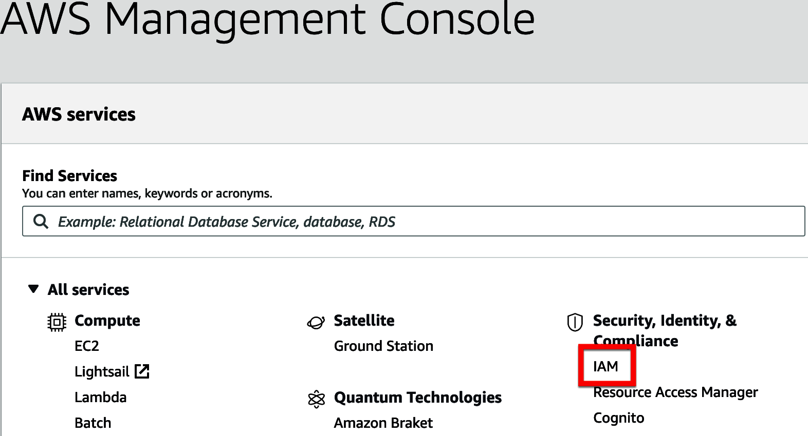
Chọn liên kết Users từ menu điều hướng IAM ở bên trái màn hình. Nhấn nút Add user để bắt đầu quá trình tạo người dùng IAM, như minh họa trong Hình 6-3.
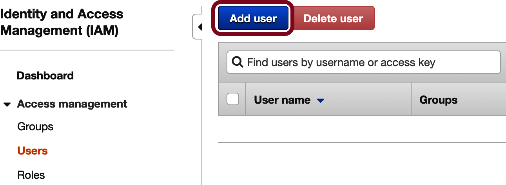
Nhập ops-account vào trường User name. Chúng ta cũng muốn dùng tài khoản này để truy cập CLI và API, vì vậy hãy chọn “Programmatic access” làm AWS “Access type”, như trong Hình 6-4.
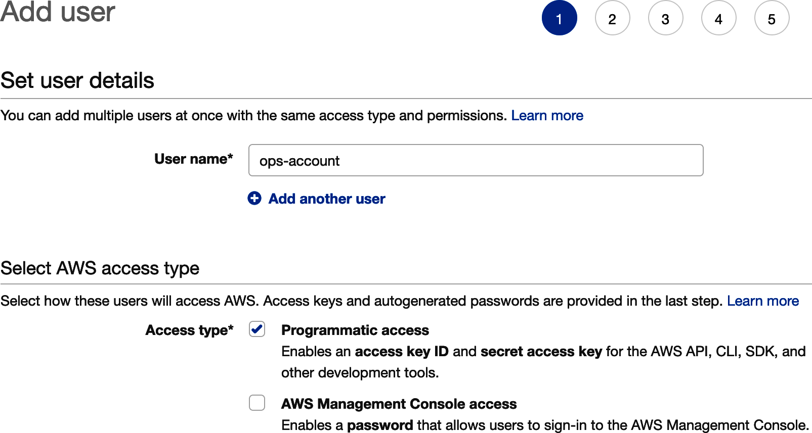
Khi hoàn tất, hãy nhấn nút Next: Permissions.
Tài khoản operator của chúng ta sẽ cần khá nhiều quyền để có thể làm việc trong AWS thay cho chúng ta. Tuy nhiên, ở giai đoạn này, chúng ta mới chỉ gắn một tập quyền duy nhất, được đóng gói trong một policy của AWS có tên là IAMFullAccess.
Để thêm policy này, hãy chọn “Attach existing policies directly” từ nhóm tùy chọn ở phía trên. Tìm policy có tên IAMFullAccess và chọn nó bằng cách tích vào checkbox của policy đó, như trong Hình 6-5.
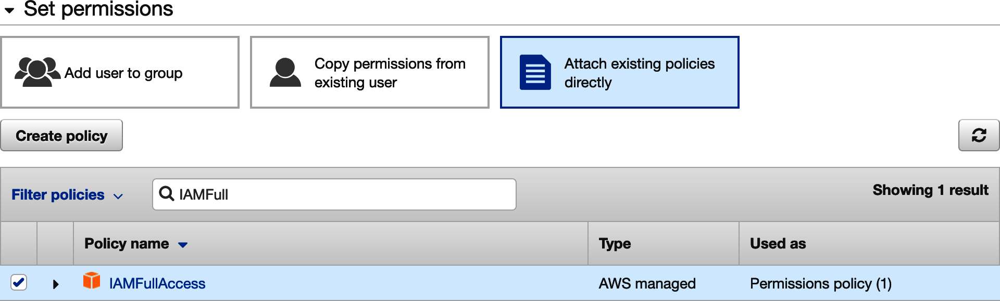
Khi đã xong, nhấn nút Next: Tags. Chúng ta sẽ không tạo tag nào, vì vậy hãy nhấn nút Next: Review để xem lại chi tiết người dùng của mình (xem Hình 6-6).
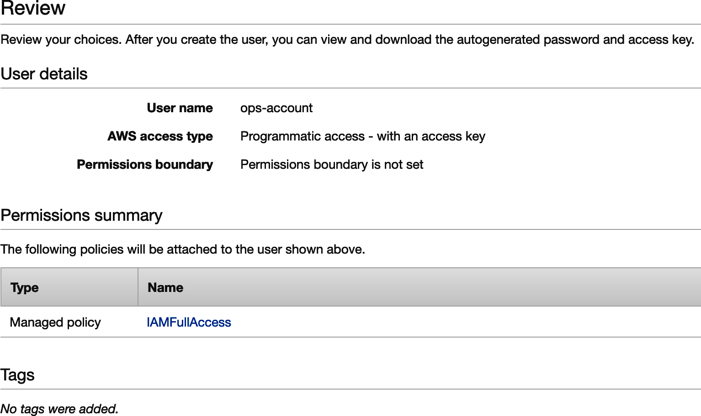
Nếu mọi thứ trông ổn, hãy nhấn nút Create user. Bây giờ bạn sẽ thấy một màn hình trông tương tự như Hình 6-7.
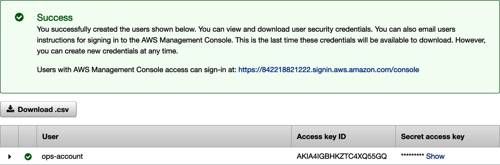
Trước khi làm bất cứ điều gì khác, chúng ta sẽ cần ghi lại khóa của người dùng mới này. Hãy nhấn liên kết Show và sao chép cả “Access key ID” lẫn “Secret access key” vào một tệp tạm thời. Chúng ta sẽ dùng cả hai giá trị này ở phần sau của chương, khi làm việc với pipeline tự động. Hãy cẩn thận với các khóa này vì bất kỳ ai có chúng đều có thể tạo tài nguyên trong môi trường AWS của bạn, với chi phí do bạn chi trả.
Hãy chắc chắn rằng bạn ghi lại access key ID và secret access key đã được tạo ra trước khi rời khỏi màn hình này. Bạn sẽ cần chúng ở phần sau của chương.
Đến đây, chúng ta đã tạo xong một người dùng tên là ops-account với quyền thực hiện thay đổi IAM. Điều đó cung cấp đủ những gì chúng ta cần để chuyển từ AWS console trên trình duyệt sang ứng dụng AWS CLI mà chúng ta đã cài trước đó. Việc đầu tiên chúng ta cần làm là cấu hình CLI để dùng người dùng ops mà chúng ta vừa tạo.
Có ba cách để quản lý cấu hình của các nhà cung cấp đám mây lớn: trình duyệt web, API nền web và CLI. Chúng ta đã dùng trình duyệt web để tạo tài khoản operator, và sau này sẽ dùng Terraform để cấu hình các thay đổi thông qua AWS API. Nhưng chúng ta sẽ cần thực hiện thêm vài thay đổi trước khi Terraform có thể gọi AWS API thay mặt cho mình. Và để làm điều đó, chúng ta sẽ dùng AWS CLI.
Việc dùng CLI giúp chúng ta mô tả các thay đổi bạn cần thực hiện dễ dàng hơn rất nhiều. Nó cũng ít bị ảnh hưởng bởi việc giao diện người dùng (UI) thay đổi theo thời gian. Nhưng để dùng CLI, việc đầu tiên chúng ta cần làm là cài nó vào môi trường làm việc cục bộ. Hãy truy cập trang tải AWS CLI và làm theo hướng dẫn ở đó để cài CLI lên hệ thống cục bộ của bạn.
Khi đã sẵn sàng, việc đầu tiên chúng ta sẽ làm là cấu hình CLI để nó có thể truy cập instance của mình. Hãy chạy lệnh aws configure như trong Ví dụ 6-1. Bạn có thể thay default region name bằng một AWS region gần với bạn hơn; danh sách đầy đủ các AWS region có tại AWS.
$aws configure AWS Access Key ID[****************AMCK]: YOUR_AWS_ACCESS_KEY_ID AWS Secret Access Key[****************t+ND]: YOUR_AWS_SECRET_ACCESS_KEY Default region name[None]: eu-west-2 Default output format[None]: json
Bạn có thể kiểm tra xem mình đã cấu hình CLI đúng hay chưa bằng cách liệt kê các tài khoản người dùng đã được tạo. Hãy chạy lệnh iam list-users để kiểm tra thiết lập của mình:
$ aws iam list-users
{
"Users": [
{
"Path": "/",
"UserName": "admin",
"UserId": "AYURIGDYE7PXW3QCYYEWM",
"Arn": "arn:aws:iam::842218941332:user/admin",
"CreateDate": "2019-03-21T14:01:03+00:00"
},
{
"Path": "/",
"UserName": "ops-account",
"UserId": "AYUR4IGBHKZTE3YVBO2OB",
"Arn": "arn:aws:iam::842218941332:user/ops-account",
"CreateDate": "2020-07-06T15:15:31+00:00"
}
]
}
Nếu bạn đã làm mọi thứ đúng, bạn sẽ thấy danh sách các tài khoản người dùng AWS của mình. Điều đó cho thấy AWS CLI đang hoạt động chính xác và có thể truy cập instance của bạn. Giờ đây, chúng ta có thể thiết lập các quyền mà tài khoản vận hành của mình sẽ cần.
Khi chúng ta tạo người dùng ops-account, chúng ta đã gắn cho nó một policy IAM chỉ cho phép sửa đổi các thiết lập IAM. Nhưng tài khoản ops của chúng ta sẽ cần nhiều quyền hơn thế để có thể quản lý các tài nguyên AWS mà chúng ta cần cho quá trình xây dựng hạ tầng. Trong phần này, chúng ta sẽ dùng công cụ dòng lệnh AWS để tạo và gắn thêm các policy quyền hạn cho tài khoản ops.
Điều đầu tiên chúng ta sẽ làm là đưa người dùng ops-account vào một group mới tên là Ops-Accounts. Nhờ vậy, nếu muốn những người dùng mới cũng có cùng quyền, chúng ta chỉ cần đưa họ vào group. Hãy dùng lệnh sau để tạo một group mới tên là Ops-Accounts:
$ aws iam create-group --group-name Ops-Accounts
Nếu thành công, AWS CLI sẽ hiển thị group vừa được tạo:
{
"Group": {
"Path": "/",
"GroupName": "Ops-Accounts",
"GroupId": "AGPA4IGBHKZTGWGQWW67X",
"Arn": "arn:aws:iam::842218941332:group/Ops-Accounts",
"CreateDate": "2020-07-06T15:29:14+00:00"
}
}
Giờ thì chúng ta chỉ cần thêm người dùng của mình vào group mới đó. Hãy dùng lệnh sau để thực hiện:
$ aws iam add-user-to-group --user-name ops-account --group-name Ops-Accounts
Nếu lệnh hoạt động, bạn sẽ không nhận được phản hồi nào từ CLI. Trong trường hợp này, không có tin tức nào chính là tin tốt.
Tiếp theo, chúng ta cần gắn một tập quyền vào group Ops-Account. Vì đã đưa người dùng vận hành vào group này nên các quyền đó sẽ tự động được áp cho người dùng đó. Những quyền mà chúng ta sắp gắn sẽ cho phép người dùng của mình tạo và thay đổi tài nguyên AWS. Trong thực tế, rất có thể bạn sẽ phải thay đổi quyền của người dùng Ops trong suốt quá trình thiết kế hạ tầng. Còn trong cuốn sách này, chúng tôi đã thực hiện trước công việc thiết kế nên đã biết chính xác những policy nào cần được gắn.
Hãy chạy lệnh sau để gắn toàn bộ các policy mà chúng ta cần vào group Ops-Accounts:
$ aws iam attach-group-policy --group-name Ops-Accounts\ --policy-arn arn:aws:iam::aws:policy/IAMFullAccess &&\ aws iam attach-group-policy --group-name Ops-Accounts\ --policy-arn arn:aws:iam::aws:policy/AmazonEC2FullAccess &&\ aws iam attach-group-policy --group-name Ops-Accounts\ --policy-arn arn:aws:iam::aws:policy/AmazonEC2ContainerRegistryFullAccess &&\ aws iam attach-group-policy --group-name Ops-Accounts\ --policy-arn arn:aws:iam::aws:policy/AmazonEKSClusterPolicy &&\ aws iam attach-group-policy --group-name Ops-Accounts\ --policy-arn arn:aws:iam::aws:policy/AmazonEKSServicePolicy &&\ aws iam attach-group-policy --group-name Ops-Accounts\ --policy-arn arn:aws:iam::aws:policy/AmazonVPCFullAccess &&\ aws iam attach-group-policy --group-name Ops-Accounts\ --policy-arn arn:aws:iam::aws:policy/AmazonRoute53FullAccess &&\ aws iam attach-group-policy --group-name Ops-Accounts\ --policy-arn arn:aws:iam::aws:policy/AmazonS3FullAccess
Một bản sao dạng script của lệnh này có tại trang GitHub của cuốn sách.
Bên cạnh các policy có sẵn mà AWS cung cấp, chúng ta cũng sẽ cần một số quyền đặc biệt để làm việc với AWS Elastic Kubernetes Service (EKS). Chúng ta sẽ giới thiệu EKS một cách đầy đủ ở chương tiếp theo, nhưng trước mắt cần sắp xếp xong phần quyền hạn. Không có sẵn một policy phù hợp để gắn cho những quyền mà chúng ta cần, vì vậy chúng ta sẽ phải tự tạo policy tùy chỉnh của riêng mình rồi gắn nó vào group người dùng.
Để làm điều đó, hãy tạo một tệp tên là custom-eks-policy.json và điền vào đó mã trong Ví dụ 6-2. Chúng tôi cũng đã cung cấp sẵn một bản sao của tệp JSON này trong repository GitHub của cuốn sách.
{
"Version": "2012-10-17",
"Statement": [
{
"Effect": "Allow",
"Action": [
"eks:DescribeNodegroup",
"eks:DeleteNodegroup",
"eks:ListClusters",
"eks:CreateCluster"
],
"Resource": "*"
},
{
"Effect": "Allow",
"Action": "eks:*",
"Resource": "arn:aws:eks:*:*:cluster/*"
}
]
}Bây giờ, hãy chạy lệnh sau để tạo một policy mới tên là EKS-Management dựa trên JSON mà chúng ta vừa tạo:
$ aws iam create-policy --policy-name EKS-Management\ --policy-document file://custom-eks-policy.json
Nếu lệnh thành công, bạn sẽ thấy một biểu diễn JSON của policy mới:
{
"Policy": {
"PolicyName": "EKS-Management",
"PolicyId": "ANPA4IGBHKZTP3CFK4FAW",
"Arn": "arn:aws:iam::[some_number]:policy/EKS-Management",
"Path": "/",
"DefaultVersionId": "v1",
"AttachmentCount": 0,
"PermissionsBoundaryUsageCount": 0,
"IsAttachable": true,
"CreateDate": "2020-07-06T15:50:26+00:00",
"UpdateDate": "2020-07-06T15:50:26+00:00"
}
}
Trong AWS, mọi tài nguyên đều có một định danh duy nhất gọi là Amazon Resource Name (ARN). Chuỗi chữ số trong ARN của policy mà bạn vừa tạo sẽ là duy nhất đối với bạn và AWS instance của bạn. Bạn sẽ cần ghi lại chuỗi ARN của policy này để có thể tham chiếu nó trong các bước tiếp theo.
Khi policy mới đã được tạo, việc còn lại chỉ là gắn nó vào group người dùng. Hãy chạy lệnh sau, thay token mà chúng ta gọi là {YOUR_POLICY_ARN} bằng ARN từ policy của bạn:
$ aws iam attach-group-policy --group-name Ops-Accounts \
--policy-arn {YOUR_POLICY_ARN}
Bây giờ bạn đã có một người dùng ops-account với các quyền cần thiết để tự động tạo tài nguyên hạ tầng AWS cho chúng ta. Chúng ta sẽ dùng tài khoản này khi viết mã Terraform và khi cấu hình pipeline hạ tầng. Hãy chắc rằng bạn giữ access key và secret ở đâu đó thuận tiện (và an toàn), vì chúng ta sẽ cần chúng sau này.
Chúng ta còn một bước thiết lập cuối cùng phải xử lý trước khi có thể bắt tay vào xây dựng pipeline: tạo một bucket lưu trữ AWS S3 để Terraform lưu state.
Terraform rất mạnh vì nó cho phép chúng ta khai báo một hạ tầng trông phải như thế nào, thay vì định nghĩa các bước cụ thể cần để đạt tới trạng thái đó. Terraform thực hiện “phép màu” của mình bằng cách đưa ra các thay đổi phù hợp để môi trường trông giống như những gì chúng ta mô tả. Nhưng để làm được điều đó, Terraform cần theo dõi môi trường đang trông ra sao và các thao tác gần nhất mà nó đã thực hiện. Terraform theo dõi toàn bộ thông tin đó trong một tệp state dạng JSON mà nó sẽ đọc và cập nhật mỗi lần chạy.
Theo mặc định, Terraform sẽ lưu tệp state này trên filesystem cục bộ của bạn. Trong thực tế, việc lưu tệp state ở local là có vấn đề. State thường cần được chia sẻ giữa nhiều máy và nhiều người dùng để một môi trường có thể được quản lý ở nhiều nơi khác nhau. Tuy nhiên, các tệp state cục bộ khó chia sẻ và bạn có thể rất dễ rơi vào xung đột state cũng như các vấn đề đồng bộ hóa.
Thay vào đó, chúng ta sẽ dùng dịch vụ AWS S3 để lưu tệp state của Terraform. Terraform có hỗ trợ sẵn cho việc dùng S3 làm backend state. Việc duy nhất cần làm là tạo một “bucket” mới để chứa dữ liệu và đảm bảo rằng tài khoản người dùng ops của chúng ta có đủ quyền để sử dụng nó.
Giống như hầu hết nhà cung cấp đám mây, AWS cung cấp rất nhiều lựa chọn lưu trữ dữ liệu khác nhau. Amazon Simple Storage Service (S3) cho phép bạn tạo các đối tượng dữ liệu có thể được tham chiếu bằng key. Với Amazon, các đối tượng dữ liệu này chỉ là blob và có thể ở bất kỳ định dạng nào bạn muốn. Trong trường hợp này, Terraform sẽ lưu state của môi trường dưới dạng các đối tượng JSON.
Để tạo bucket, bạn sẽ cần đặt cho nó một cái tên duy nhất và chọn region mà bucket sẽ nằm trong đó. Bạn hẳn đã chọn một default region khi cấu hình AWS CLI, và chúng tôi gợi ý rằng bạn nên dùng cùng region đó cho bucket S3. Bạn có thể tìm thêm thông tin về region của S3 bucket trong tài liệu AWS.
Amazon S3 bucket có thể được tham chiếu bằng chính tên của chúng. Vì vậy, cái tên bạn chọn phải là duy nhất trên toàn bộ AWS region mà bạn chọn. Khả năng cao là bạn sẽ không thể dùng những tên quá phổ thông như “test” hay “microservices.” Thay vào đó, bạn sẽ cần nghĩ ra một cái tên đủ riêng. Thông thường, chỉ cần thêm tên của bạn vào tên bucket là được. Trong suốt cuốn sách này, bất cứ khi nào nhắc đến S3 bucket này, chúng tôi sẽ dùng token {YOUR_S3_BUCKET_NAME} và để bạn tự thay bằng tên bucket của mình.
Nếu bạn đang lưu trữ bucket trong region us-east-1, hãy dùng lệnh sau:
S3 cần được xử lý đặc biệt nếu bạn không ở region us-east-1. Chúng tôi đã liệt kê cả phiên bản mặc định cho us-east-1 và phiên bản dành cho region khác ở các ví dụ sau. Chúng tôi cũng đã tách dòng lệnh bằng toán tử multiline “\” của bash để dễ đọc hơn.
$ aws s3api create-bucket --bucket {YOUR_S3_BUCKET_NAME} \
> --region us-east-1
Nếu bạn lưu trữ S3 bucket ở một region khác us-east-1, hãy dùng lệnh sau:
$ aws s3api create-bucket --bucket {YOUR_S3_BUCKET_NAME} \
> --region {YOUR_AWS_REGION} --create-bucket-configuration \
> LocationConstraint={YOUR_AWS_REGION}
Nếu mọi việc diễn ra suôn sẻ, bạn sẽ thấy một đối tượng JSON chứa vị trí của bucket. Nó sẽ trông giống như ví dụ này đối với bucket tên my-msur-test:
{
"Location": "http://my-msur-test.s3.amazonaws.com/"
}
Điều này cho thấy bucket đã được tạo thành công và đã được gán một URL duy nhất. Theo mặc định, S3 bucket không thể truy cập công khai. Đó là điều tốt vì chúng ta không muốn bất kỳ ai cũng có thể nhìn thấy và thay đổi tệp state Terraform của mình. Tuy nhiên, vì trước đó chúng ta đã cấp cho người dùng ops toàn quyền với dịch vụ S3, nên bucket đã sẵn sàng để dùng.
Với bước cuối cùng này hoàn tất, giờ đây chúng ta có một người dùng AWS tên là ops-account đã được cấu hình để tạo, chỉnh sửa và xóa tài nguyên trên AWS. Chúng ta cũng đã cấp cho nó quyền lưu đối tượng trong một bucket S3 đặc biệt mà mình tạo riêng để quản lý Terraform state. Đây nên là lần cuối cùng chúng ta thực hiện thay đổi thủ công bằng operator trên AWS instance; từ đây trở đi chúng ta sẽ chỉ thực hiện thay đổi thông qua mã và bằng một
pipeline tự động!
Khi các tài khoản, quyền hạn và công cụ đã sẵn sàng, chúng ta có thể bắt đầu tập trung vào nội dung chính của chương này. Đến cuối phần này, chúng ta sẽ có một pipeline IaC đã được triển khai và sẵn sàng sử dụng. Hãy nhớ rằng pipeline hạ tầng cực kỳ quan trọng vì nó mang lại cho chúng ta một cách an toàn và dễ dàng để cấp phát môi trường nhanh chóng. Nếu không có pipeline, chúng ta sẽ rơi vào rất nhiều bước thủ công và các môi trường microservices bị trôi lệch khỏi nhau về cách vận hành.
Thay vào đó, chúng ta sẽ có một định nghĩa khai báo ổn định cho hạ tầng của các dịch vụ. Các nhóm phát triển và vận hành sẽ có thể dùng những định nghĩa đó để tạo ra các môi trường của riêng họ nhằm phục vụ kiểm thử, thay đổi và phát hành dịch vụ lên môi trường sản xuất. Trong chương này, chúng ta sẽ chưa triển khai bất kỳ hạ tầng AWS thực tế nào, nhưng sẽ triển khai nền tảng mà mình sẽ dùng trong chương tiếp theo. Trong phần này, chúng ta sẽ xây dựng các thành phần sau:
Một Git repository được lưu trữ trên GitHub cho môi trường kiểm thử sandbox
Một Terraform root module định nghĩa sandbox
Một pipeline CI/CD GitHub Actions có thể tạo ra môi trường sandbox
Môi trường kiểm thử sandbox mà chúng ta đang xây chỉ là một môi trường thử nghiệm, giúp chúng ta có cơ hội thử các mô-đun IaC và pipeline của mình. Chúng ta sẽ xây nó ở chương tiếp theo rồi bỏ đi khi đã hài lòng rằng mọi thứ hoạt động đúng. Sau này, chúng ta sẽ dùng tất cả các tài sản đó để xây dựng một môi trường kiểm thử cho các microservices mà mình sẽ thiết kế và xây dựng.
Nhưng bước đầu tiên của chúng ta sẽ là thiết lập một repository cho mã và pipeline, vì vậy hãy bắt đầu với việc tạo repository.
Ngay từ đầu chương này, chúng ta đã nhắc đến việc sẽ dùng Git và GitHub để quản lý mã hạ tầng. Nếu bạn đã làm theo đến đây, hẳn bạn đã có sẵn một bản cài Git cục bộ và một tài khoản GitHub sẵn sàng dùng. Chúng ta sẽ dùng cả hai công cụ đó để tạo một repository mới cho môi trường sandbox của mình.
Trong mô hình của mình, chúng ta đã quyết định cấp cho mỗi môi trường một repository riêng, nơi mã và pipeline được đóng gói cùng nhau. Chúng tôi thích cách tiếp cận này vì nó cho các nhóm nhiều tính độc lập hơn trong cách họ quản lý những môi trường mà họ muốn tạo, đồng thời vẫn giữ cấu hình pipeline và mã ở cùng một nơi để dễ quản lý hơn.
Chúng ta sẽ dùng giao diện trình duyệt của GitHub để tạo repository sandbox. Mặc dù có một ứng dụng GitHub CLI, sẽ nhanh và dễ hơn nếu dùng giao diện web để tạo repository mới. Sau này, chúng ta cũng sẽ dùng giao diện GitHub trên trình duyệt để chạy và theo dõi pipeline.
Một số người thực hành thích giữ tất cả cấu hình môi trường cùng nhau trong một “monorepo”. Điều này giúp chia sẻ thư viện, thành phần và action giữa mọi môi trường dễ hơn, đồng thời giúp duy trì tính nhất quán. Phần lớn người thực hành cũng dùng bộ công cụ CI/CD chuyên dụng (Jenkins là một trong những lựa chọn phổ biến nhất), thay vì build ngay bên trong GitHub. Đây là một quyết định quan trọng, vì vậy bạn sẽ cần cân nhắc các đánh đổi khi xây dựng kiến trúc microservices tiếp theo của mình dựa trên những quan sát thu được từ hệ thống mà chúng ta đang xây cùng nhau.
Để tạo repository, hãy mở trình duyệt và truy cập trang đăng nhập GitHub. Nếu bạn chưa đăng nhập tài khoản GitHub, bạn sẽ được yêu cầu nhập thông tin đăng nhập. Sau khi xong, bạn sẽ thấy một biểu mẫu để tạo repository mới. Hãy đặt tên repository mới là env-sandbox và chọn Private trong các tùy chọn truy cập. Bạn cũng nên tích vào ô Add .gitignore và chọn Terraform từ danh sách xổ xuống, như trong Hình 6-8.
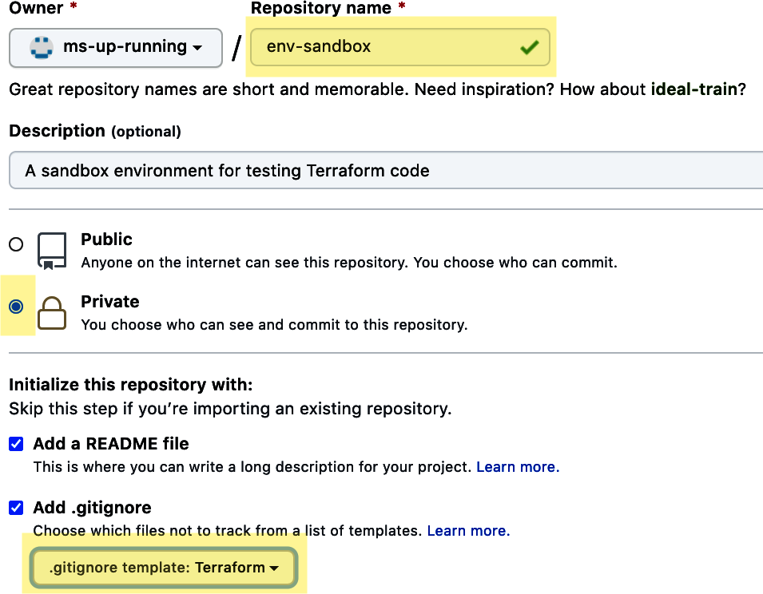
Điều quan trọng là chúng ta yêu cầu GitHub thêm tệp .gitignore dành cho Terraform vào module vì điều đó sẽ giúp đảm bảo rằng chúng ta không vô tình commit các tệp làm việc ẩn của Terraform vào module. Nếu bạn bỏ sót bước này thì vẫn có thể thêm tệp đó sau bằng cách sao chép nội dung từ trang GitHub này.
Viết mã bằng trình soạn thảo văn bản trên trình duyệt của GitHub là điều có thể làm, nhưng không thực sự thực tế cho công việc thật. Thay vào đó, chúng ta sẽ clone repository này về môi trường phát triển cục bộ để có thể dùng các công cụ quen thuộc của mình. Chúng tôi xin để bạn tự tạo một bản clone của repository env-sandbox trong môi trường phát triển cục bộ.
Nếu bạn chưa từng làm việc với Git và GitHub, bạn có thể tìm thấy hướng dẫn hữu ích về cách clone một GitHub repository trong tài liệu chính thức của GitHub.
Như vậy là đủ cho phần làm việc với GitHub vào lúc này. Chúng ta sẽ quay lại giao diện GitHub trên trình duyệt sau, khi làm việc với pipeline. Còn với bản clone cục bộ đã tạo xong, chúng ta có thể bắt đầu viết mã Terraform.
Chúng ta đã đề cập trước đó rằng sẽ dùng Terraform làm công cụ lựa chọn của mình để khai báo hạ tầng nền tảng bằng mã. Terraform thực hiện rất nhiều công việc phức tạp để tạo ra các thay đổi khớp với một trạng thái được khai báo. Tuy vậy, việc bắt đầu với nó lại khá dễ và ngôn ngữ mà nó sử dụng cũng tương đối trực quan. Điều đó khiến nó rất phù hợp với kiến trúc của chúng ta và với mục tiêu đưa hệ thống vào hoạt động nhanh nhất có thể.
Các tệp Terraform được cấu hình bằng một định dạng dữ liệu gọi là HCL, do HashiCorp (công ty tạo ra Terraform) phát minh. HCL khá giống JSON, nhưng có một số điều chỉnh và cải tiến. Nếu bạn quen với JSON, khác biệt lớn nhất mà bạn sẽ nhận thấy là HCL không dùng dấu ":" để phân tách giữa key và value. Thay vào đó, key và value chỉ được phân tách bằng khoảng trắng hoặc dấu "=" tùy theo ngữ cảnh. Ngoài ra còn có một vài cải tiến nhỏ khác như comment và chuỗi nhiều dòng. Theo kinh nghiệm của chúng tôi, đây là một ngôn ngữ dễ học, với đường cong học tập rất thấp nếu bạn từng dùng JSON hoặc YAML trước đó.
Ngoài việc hiểu HCL, sẽ rất hữu ích nếu hiểu bốn khái niệm trọng yếu của Terraform: backends, providers, resources và modules:
Terraform cần duy trì một tệp state để biết mình cần thực hiện những thay đổi nào lên môi trường hạ tầng. Backend là vị trí của tệp state đó. Theo mặc định, nó nằm trên filesystem cục bộ. Chúng ta sẽ dùng một bucket AWS S3 mà mình đã cấu hình trước đó.
Resource là một đối tượng đại diện cho một thứ mà bạn đang khai báo trạng thái cho nó. Terraform sẽ làm phần việc đưa resource đó đến trạng thái đã khai báo.
Terraform provider là một thư viện đóng gói các resource mà bạn có thể sử dụng trong mã của mình. Chúng ta sẽ dùng AWS provider của Terraform cho phần lớn công việc. Điểm hay của Terraform là bạn có thể dùng nó cho rất nhiều nền tảng đám mây và môi trường hạ tầng khác nhau; bạn chỉ cần chỉ rõ provider mà mình định dùng.
Terraform module tương tự như function hay procedure trong ngôn ngữ lập trình thông thường. Chúng mang lại cho bạn một cách tốt để bao đóng mã HCL theo hướng tái sử dụng và có tính mô-đun.
Terraform còn nhiều điều hơn những gì chúng ta vừa mô tả, nhưng lượng kiến thức đó đã đủ để chúng ta bắt đầu công việc xây dựng môi trường của mình. Nếu muốn tìm hiểu sâu hơn, tài liệu Terraform là một nơi tuyệt vời để bắt đầu.
Bước tiếp theo của chúng ta là viết một ít mã Terraform để giúp xây dựng môi trường sandbox.
Mục tiêu của chúng ta trong chương này là thiết lập bộ công cụ và hạ tầng cho quá trình xây dựng môi trường, nên chúng ta sẽ chưa viết một tệp Terraform hoàn chỉnh định nghĩa toàn bộ hạ tầng cho đến chương tiếp theo. Hiện tại, chúng ta chỉ cần tạo một tệp khởi đầu đơn giản để kiểm tra chuỗi công cụ dựa trên Terraform của mình.
Terraform CLI hoạt động bằng cách tìm những tệp mà nó nhận biết được trong thư mục làm việc nơi nó được chạy. Cụ thể, nó tìm một tệp tên là main.tf, phân tích tệp đó và áp dụng các thay đổi dựa trên nội dung của nó. Bạn chỉ có thể có một tệp main.tf trong một thư mục duy nhất, vì vậy chúng ta sẽ cần một thư mục dành riêng cho môi trường sandbox của mình và cần tạo một tệp Terraform main.tf mô tả trạng thái đích của môi trường đó.
Chúng ta đã tạo một Git repository tên là env-sandox cho môi trường sandbox, nên đó sẽ là thư mục dùng cho mã Terraform. Hãy bắt đầu bằng cách tạo một tệp mới tên là main.tf trong repository Git sandbox cục bộ. Điền vào đó mã HCL trong Ví dụ 6-3.
Bạn sẽ cần thay các token {YOUR_S3_BUCKET_NAME} và {YOUR_AWS_REGION} bằng tên bucket S3 mà bạn đã tạo trước đó và AWS region mà bạn đang sử dụng.
terraform {
backend "s3" {
bucket = "{YOUR_S3_BUCKET_NAME}"
key = "terraform/backend"
region = "{YOUR_AWS_REGION}"
}
}
locals {
env_name = "sandbox"
aws_region = "{YOUR_AWS_REGION}"
k8s_cluster_name = "ms-cluster"
}
# Network Configuration
# EKS Configuration
# GitOps Configuration
Tên bucket S3 chỉ nên là tên bucket, không phải toàn bộ URL (ví dụ: my-bucket).
Đoạn HCL mà bạn vừa viết cho Terraform biết rằng chúng ta đang sử dụng một S3 bucket để lưu backend state. Nó cũng định nghĩa một tập biến cục bộ bằng một construct của Terraform là locals. Cuối cùng, nó có một vài comment Terraform ở cuối, chỉ ra nơi chúng ta sẽ bổ sung chi tiết hạ tầng. Chúng ta sẽ sử dụng các biến cục bộ này và hoàn thiện phần cấu hình còn lại trong chương tiếp theo. Còn bây giờ, chúng ta chỉ muốn kiểm tra phần khung của tệp Terraform.
Khi đã viết xong tệp mã Terraform đầu tiên, chúng ta đã sẵn sàng thử chạy một số lệnh Terraform để bảo đảm nó hoạt động như mong đợi. Terraform CLI đi kèm nhiều tính năng hữu ích để cải thiện chất lượng và độ an toàn của mã hạ tầng. Bạn có thể dùng nó để định dạng (hay lint) HCL đã viết, xác thực cú pháp và thực hiện một dry run cho các thay đổi mà Terraform sẽ áp dụng lên provider của bạn.
Nếu bạn đã làm theo hướng dẫn trước đó trong chương này, bạn sẽ có sẵn một bản Terraform cục bộ trong môi trường làm việc. Hãy bảo đảm bạn đang ở cùng thư mục với tệp main.tf, rồi thử chạy lệnh fmt để định dạng mã:
env-sandbox msur$ terraform fmt main.tf
Lệnh fmt là một formatter sẽ xem xét tệp HCL của bạn và thực hiện các thay đổi để cải thiện tính nhất quán cũng như khả năng đọc. Nếu có thay đổi nào được thực hiện, nó sẽ in ra tên của tệp đã bị sửa.
Tiếp theo, chúng ta sẽ xác thực rằng cú pháp HCL mà mình viết là hợp lệ. Nhưng trước khi làm vậy, chúng ta sẽ cần cài các provider mà mình đang dùng; nếu không Terraform sẽ phàn nàn rằng nó không thể kiểm tra cú pháp. Hãy chạy lệnh sau để cài các provider:
env-sandbox msur$ terraform init Successfully configured the backend "s3"! Terraform will automatically use this backend unless the backend configuration changes. Terraform has been successfully initialized! You may now begin working with Terraform. Try running "terraform plan" to see any changes that are required for your infrastructure. All Terraform commands should now work. If you ever set or change modules or backend configuration for Terraform, rerun this command to reinitialize your working directory. If you forget, other commands will detect it and remind you to do so if necessary.
Nếu bạn gặp lỗi liên quan tới AWS credential, hãy chắc rằng mình đã làm theo các hướng dẫn ở đầu chương này để cấu hình quyền truy cập vào một môi trường AWS trước đã.
Bây giờ chúng ta có thể chạy lệnh validate để bảo đảm rằng mình không tạo ra lỗi cú pháp nào:
env-sandbox msur$ terraform validate Success! The configuration is valid.
Cuối cùng, chúng ta có thể chạy một lệnh tên là plan để xem Terraform sẽ tạo ra những thay đổi gì nhằm xây dựng môi trường mà chúng ta đã chỉ định. Lệnh này thực hiện đúng các bước sẽ được chạy khi mã được áp dụng, nhưng không thực hiện thay đổi thực tế nào. Hãy nghĩ về nó như một lần chạy thử cho phép Terraform cho bạn thấy kế hoạch của nó để đưa hạ tầng đến trạng thái mà bạn yêu cầu. Hãy dùng lệnh sau để chạy một plan:
$ terraform plan Refreshing Terraform state in-memory prior to plan... The refreshed state will be used to calculate this plan, but will not be persisted to local or remote state storage.
No changes. Infrastructure is up-to-date.
Điều này có nghĩa là Terraform không phát hiện thấy khác biệt nào giữa cấu hình của bạn và các tài nguyên vật lý ngoài đời thực. Kết quả là không có hành động nào cần được thực hiện.
Hãy lưu ý rằng kết quả plan của chúng ta chưa có gì thú vị: “No changes.” Đó là vì chúng ta vẫn chưa định nghĩa bất kỳ resource nào cần tạo. Tin tốt là giờ đây chúng ta đã có một tệp Terraform hợp lệ về mặt cú pháp để bắt đầu xây dựng môi trường sandbox. Đây là thời điểm tốt để commit và push tệp đó lên GitHub repository để tệp sẵn sàng được sử dụng:
$ git add . $ git commit -m "The sandbox starter file" $ git push origin
Khi tệp Terraform đã hoạt động và sẵn sàng sử dụng, chúng ta có thể chuyển trọng tâm sang pipeline mà chúng ta sẽ dùng để tự động áp dụng nó.
Trong phần này, chúng ta sẽ thiết lập một pipeline CI/CD tự động có thể tự động áp dụng tệp Terraform mà chúng ta vừa tạo. Để cấu hình các hoạt động của pipeline, chúng ta sẽ dùng công cụ DevOps tích hợp sẵn của GitHub là GitHub Actions. Điểm hay của GitHub Actions là chúng ta có thể đặt cấu hình pipeline cùng một nơi với mã hạ tầng.
Cách dễ nhất để dùng GitHub Actions là cấu hình nó qua giao diện trình duyệt. Vì vậy, hãy quay lại trình duyệt và điều hướng đến repository sandbox mà bạn đã tạo trước đó trên GitHub.
Kế hoạch của chúng ta là tạo tài nguyên trong tài khoản AWS mà mình đã tạo trước đó trong chương này. Do đó, chúng ta sẽ cần bảo đảm rằng GitHub có thể sử dụng access key và secret mà chúng ta đã cấp phát khi tạo tài khoản operator. Có nhiều cách để quản lý secret trong kiến trúc microservices, nhưng đối với bộ công cụ DevOps của mình, chúng ta sẽ chỉ dùng chức năng lưu trữ secret tích hợp sẵn của GitHub.
Hãy điều hướng đến khu vực lưu trữ secret của GitHub bằng cách chọn Settings từ thanh điều hướng phía trên của repository. Chọn Secrets từ menu cài đặt ở bên trái màn hình, như trong Hình 6-9.
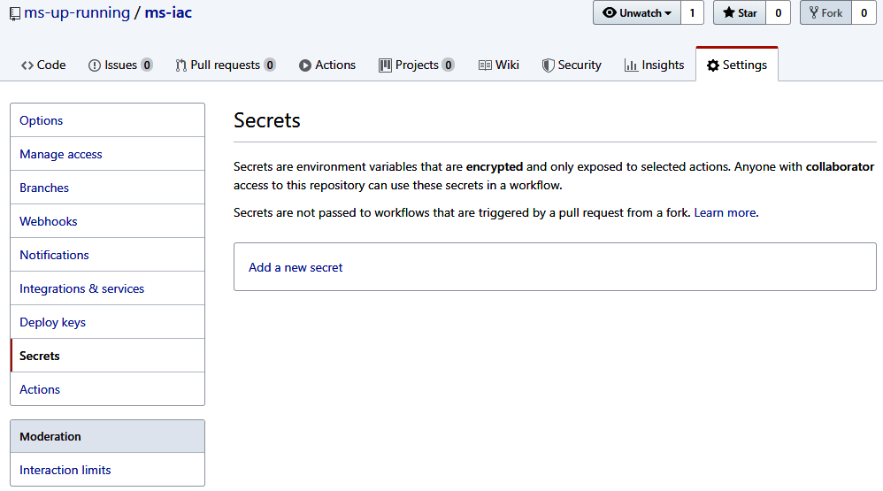
Chọn “Add a new secret” và tạo một secret tên là AWS_ACCESS_KEY_ID. Nhập access key ID mà bạn đã cất giữ trước đó khi tạo operator user. Lặp lại quy trình và tạo một secret tên là AWS_SECRET_ACCESS_KEY với secret access key mà bạn đã tạo trước đó. Khi hoàn tất, bạn sẽ có một màn hình tương tự như Hình 6-10.
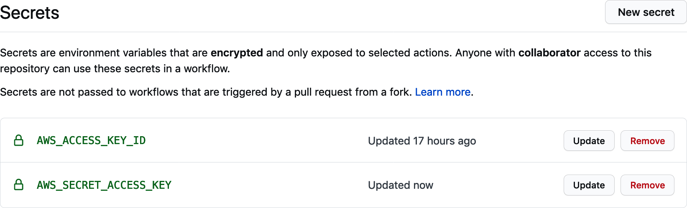
Bây giờ khi các secret đã được thêm vào, chúng ta có thể bắt đầu làm việc với workflow của pipeline.
Workflow là tập hợp các bước mà chúng ta muốn chạy mỗi khi pipeline được kích hoạt. Đối với pipeline hạ tầng microservices, chúng ta sẽ muốn có một workflow xác thực các tệp Terraform rồi áp dụng chúng lên môi trường sandbox. Nhưng ngoài việc kiểm thử và áp dụng các thay đổi hạ tầng, chúng ta cũng sẽ cần thêm một vài bước trước và sau khi áp dụng các tệp Terraform.
Workflow sẽ cần bắt đầu bằng một trigger để GitHub biết khi nào nó nên khởi chạy. GitHub Actions cung cấp một vài lựa chọn khác nhau cho trigger, nhưng chúng ta sẽ dùng cơ chế tag của Git làm trigger cho quá trình build hạ tầng. Tag là một cách để đặt tên hay gắn nhãn cho một điểm cụ thể trong lịch sử repository Git. Dùng tag làm trigger mang lại cho chúng ta một lịch sử phiên bản đẹp cho các thay đổi đang thực hiện lên môi trường. Nó cũng cho chúng ta một cách để commit tệp vào repository mà không làm kích hoạt build.
Khi workflow pipeline được kích hoạt, nó sẽ cần thao tác trên các tệp Terraform mà chúng ta đã commit vào repository. Nhưng trước đó, chúng ta sẽ cần một vài bước thiết lập để chuẩn bị môi trường build. Đầu tiên, chúng ta sẽ cài Terraform và AWS giống như đã làm trong môi trường cục bộ. Mặc dù chúng ta chạy điều này trong GitHub Actions, bản thân build thực tế diễn ra trong một máy ảo, vì vậy chúng ta cũng cần lấy một bản sao mã từ repository mã của mình.
Cuối cùng, khi các thay đổi đã được áp dụng lên môi trường sandbox, chúng ta sẽ có cơ hội thực hiện các hoạt động dọn dẹp hoặc hậu cấp phát. Trong trường hợp của chúng ta, chúng ta sẽ cung cấp một tệp cấu hình đặc biệt để có thể tải về, giúp kết nối từ máy cục bộ đến môi trường microservices chạy trên AWS. Khi hoàn tất, pipeline sẽ trông giống như Hình 6-11.
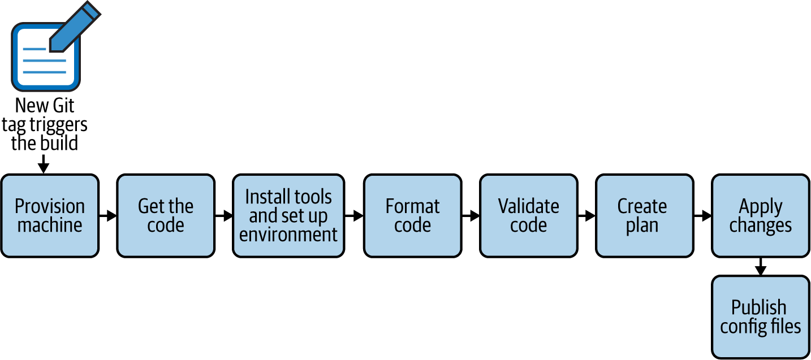
Chúng ta sẽ định nghĩa các bước của pipeline bằng ngôn ngữ YAML và tập lệnh workflow của GitHub Actions. Bạn có thể tham khảo tài liệu GitHub Actions đầy đủ. Hãy cùng đi sâu vào cấu hình YAML bằng cách điều hướng đến trang GitHub Actions của repository. Bạn có thể làm điều này bằng cách chọn Actions từ thanh điều hướng phía trên của repository sandbox trên GitHub. Khi đến đó, bạn sẽ thấy một màn hình tương tự như Hình 6-12.
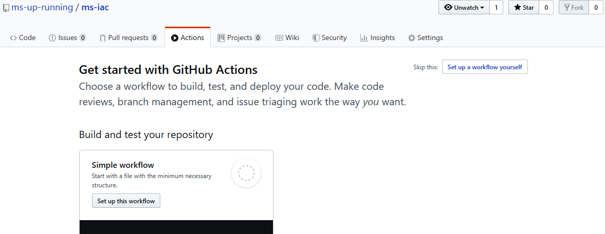
GitHub Actions cung cấp cho bạn các template để có thể nhanh chóng bắt đầu với workflow. Tuy nhiên, chúng ta sẽ bỏ qua các template và tự thiết lập workflow từ đầu. Hãy nhấn nút Set up a workflow yourself ở góc trên bên phải màn hình (hoặc ở vị trí tương đương trong phiên bản giao diện mới nhất).
Lúc này bạn sẽ thấy mình đang chỉnh sửa một tệp YAML mới được tạo cho workflow. GitHub lưu các tệp Actions trong một thư mục ẩn tên là /.github/workflows. Khi clone GitHub repository, bạn có thể chỉnh sửa các tệp này bằng bất kỳ editor nào bạn thích, hoặc tạo các tệp YAML mới để định nghĩa thêm workflow GitHub Action. Nhưng lợi thế của việc chỉnh sửa Actions trên website GitHub là bạn có thể tìm kiếm plug-in từ marketplace. Vì vậy, ở giai đoạn chỉnh sửa workflow ban đầu, chúng ta sẽ tiếp tục dùng editor trên trình duyệt.
Điều đầu tiên chúng ta sẽ làm là cấu hình trigger cho workflow và thiết lập một môi trường container để thực hiện build hạ tầng.
Để giúp bạn hiểu điều gì đang diễn ra, chúng ta sẽ khám phá tệp workflow theo từng phần riêng lẻ. Chúng ta sẽ giải thích từng phần trong quá trình đi qua, nhưng workflow thực tế đều nằm trong một tệp duy nhất. Bạn có thể xem ví dụ về tệp workflow hoàn chỉnh tại trang GitHub của cuốn sách.
Một trong những bước quan trọng nhất trong workflow của chúng ta là bước trigger khởi động nó. Như đã đề cập trước đó, chúng ta sẽ dùng một trigger đơn giản dựa trên cơ chế tag của Git. Chúng ta sẽ cấu hình pipeline để chạy bất cứ khi nào hạ tầng được gắn một nhãn bắt đầu bằng chữ v. Nhờ vậy, chúng ta có thể giữ một lịch sử phiên bản cho hạ tầng đã xây. Ví dụ, bản build hạ tầng đầu tiên có thể được gắn nhãn là “v1.0”.
Hãy thay phần YAML trong editor workflow bằng mã trong Ví dụ 6-4 để bắt đầu.
name: Sandbox Environment Build
on:
create:
tags:
- v*
jobs:
build:
runs-on: ubuntu-latest
env:
AWS_ACCESS_KEY_ID: ${{ secrets.AWS_ACCESS_KEY_ID }}
AWS_SECRET_ACCESS_KEY: ${{ secrets.AWS_SECRET_ACCESS_KEY }}
steps:
- uses: actions/checkout@v2
# Install Dependencies# Install Dependencies trong Ví dụ 6-4 là một comment. Chúng ta sẽ dùng comment trong YAML để mô tả điều gì đang xảy ra, đồng thời chỉ ra vị trí mà mình sẽ thêm YAML ở các bước tiếp theo.
Trong đoạn mã ở trên, on là một lệnh của GitHub Actions dùng để chỉ định trigger cho workflow. Chúng ta đã cấu hình workflow để chạy khi một tag mới khớp với mẫu v* được tạo ra. Ngoài ra, chúng ta còn thêm một tập jobs chỉ ra phần việc mà GitHub nên thực hiện khi workflow được kích hoạt. Job cần chạy trong một máy hoặc một container. Thuộc tính runs-on cho biết chúng ta muốn chạy build này trong một máy ảo Ubuntu Linux. Chúng ta cũng đang thêm các secret AWS đã cấu hình trước đó vào môi trường build.
Tập steps chỉ ra những bước cụ thể mà workflow sẽ thực hiện bên trong môi trường vừa được thiết lập. Nhưng trước khi làm bất cứ điều gì khác, chúng ta cần lấy mã. Vì vậy, bước đầu tiên được định nghĩa là checkout mã Terraform từ Git bằng action actions/checkout@v2 của GitHub. Việc này tạo một bản sao mã bên trong môi trường build Ubuntu để các bước còn lại của job có thể thao tác trên nó.
Action là những thư viện mã được mô-đun hóa, có thể được gọi từ workflow GitHub Actions. Action là trái tim của hệ thống GitHub Actions và mang lại cho nó sự phong phú về tính năng và khả năng tích hợp. Có một danh mục lớn action sẵn có trong GitHub Actions marketplace mà bạn có thể sử dụng trong workflow của mình. Tuy nhiên, hãy chọn lọc cẩn thận khi dùng, vì bất kỳ ai cũng có thể tạo và phát hành action mới, nên khả năng hỗ trợ, độ an toàn và chất lượng không phải lúc nào cũng được bảo đảm.
Chúng ta đã có đủ trong workflow để có thể chạy nó, nhưng nó sẽ chưa thể làm được điều gì thực sự hữu ích ngoài việc lấy bản sao mã. Điều chúng ta thực sự muốn làm là bắt đầu làm việc với Terraform, nhưng trước khi làm được điều đó thì cần thiết lập môi trường để các công cụ có thể chạy. Điều đó có nghĩa là chúng ta cần thêm một số chỉ dẫn cài đặt phần phụ thuộc.
Khi chúng ta thiết lập môi trường phát triển hạ tầng cục bộ, chúng ta đã phải cài Git, AWS và Terraform command-line tool. Chúng ta sẽ cần làm điều gì đó tương tự trong môi trường build, nhưng vì đã biết rõ những thao tác cụ thể mình sẽ chạy, chúng ta có thể thiết lập một tập dependency gọn hơn một chút.
Tin tốt là khi dùng GitHub Actions, chúng ta có sẵn Git, nên không phải lo cài nó. Ngoài ra, HashiCorp còn cung cấp sẵn một GitHub Action cho Terraform, nên chúng ta cũng không cần lo cài Terraform client. Điều duy nhất còn lại là cấu hình AWS.
Trước đó trong chương này, chúng ta đã dùng AWS CLI để thực hiện thay đổi trong tài khoản AWS. Tuy nhiên, trong môi trường pipeline, chúng ta muốn dùng Terraform để làm thay đổi. Trên thực tế, chúng ta không muốn thực hiện bất kỳ thay đổi nào ngoài những gì đã được chỉ định trong mã Terraform. Vì vậy, chúng ta sẽ không cần cài AWS CLI.
Tất cả những điều đó cho thấy chúng ta không cần cài thêm dependency nào để tạo một pipeline có thể dựng tài nguyên AWS cho mình. Nhưng khi bắt đầu xây dựng hạ tầng ở chương tiếp theo, chúng ta sẽ phát hiện ra rằng hạ tầng của mình cần một số dependency đặc biệt để xử lý các phức tạp khi cài đặt kiến trúc microservices dựa trên Kubernetes.
Vì đây là một cuốn sách, chúng tôi đã xác định trước các dependency mà pipeline của bạn sẽ cần, trước cả khi bạn biết vì sao mình cần chúng. Đó là vì sách sẽ dễ đọc hơn khi trình bày theo tuyến tính, nên chúng tôi đã làm trước công việc này để cung cấp cho bạn một chuỗi hướng dẫn tuyến tính để làm theo. Trong thực tế, bạn sẽ đi qua nhiều vòng lặp chỉnh sửa action của pipeline khi kiểm thử, học hỏi và phát triển các pipeline cho hạ tầng và microservices của mình.
Cụ thể, chúng ta sẽ cài một công cụ AWS authenticator và một bộ cài cho Istio service mesh. AWS authenticator là một command-line tool mà các công cụ khác có thể dùng để xác thực và truy cập môi trường AWS. Nó sẽ hữu ích ở giai đoạn sau, khi chúng ta làm việc với Kubernetes và cần cấu hình quyền truy cập vào một Kubernetes cluster được lưu trữ trên AWS. Istio là một công cụ service mesh. Chúng ta sẽ giới thiệu Istio trong chương tiếp theo; còn hiện tại, chúng ta chỉ cần chắc chắn rằng CLI tool của nó đã được cài.
Hãy thêm mã trong Ví dụ 6-5 vào tệp workflow để thiết lập các phần phụ thuộc đó trong môi trường build. Các bước này cần được thêm sau comment # Install Dependencies mà chúng ta đã đặt trước đó. Hãy cẩn thận với phần thụt đầu dòng và đảm bảo nó thẳng hàng với bước -uses ở trên, vì YAML rất nhạy cảm với khoảng trắng.
[...]
# Install Dependencies
- name: Install aws-iam-authenticator
run: |
echo Installing aws-iam-authenticator...
mkdir ~/aws
curl -o ~/aws/aws-iam-authenticator \
"https://amazon-eks.s3.us-west-2.amazonaws.com/\
1.16.8/2020-04-16/bin/linux/amd64/aws-iam-authenticator"
chmod +x ~/aws/aws-iam-authenticator
sudo cp ~/aws/aws-iam-authenticator /usr/local/bin/aws-iam-authenticator
# Apply TerraformCác lệnh run trong YAML mà bạn vừa thêm sẽ chạy lệnh shell trong môi trường build Ubuntu. Chúng ta đã thêm hướng dẫn cài AWS IAM Authenticator dựa trên tài liệu AWS cũng như cài CLI tool của Istio.
Máy ảo (VM) được định nghĩa trong workflow GitHub Actions sẽ được tạo mới ở đầu mỗi lần chạy pipeline và bị hủy khi hoàn tất. Điều đó có nghĩa là các công cụ của chúng ta sẽ được cài đặt lại mỗi lần job được kích hoạt và sẽ không có trạng thái nào được giữ lại giữa các lần chạy.
Phần cuối của YAML sử dụng Terraform setup action do HashiCorp cung cấp. Như bạn có thể thấy, cách này sạch và dễ đọc hơn nhiều so với các lệnh cài đặt bằng command line mà chúng ta dùng cho AWS authenticator và Istio. GitHub Actions phát huy hiệu quả nhất khi có sẵn action để sử dụng, vì vậy rất đáng để tận dụng chúng khi phù hợp với nhu cầu của bạn.
Khi các phần phụ thuộc đã được thiết lập và Terraform đã sẵn sàng, giờ đây chúng ta có thể thêm các bước xử lý Terraform vào workflow của mình.
Trong “Viết Mã cho Môi trường Sandbox”, chúng ta đã dùng các lệnh Terraform để định dạng và xác thực mã HCL mà mình đã viết trong main.tf. Chúng ta muốn làm điều gì đó tương tự trong pipeline, nhưng theo cách tự động. Mục tiêu là để mã Terraform được tự động định dạng, xác thực và lập kế hoạch. Chúng ta cũng sẽ thêm một bước “apply” tự động để thực sự áp dụng plan và triển khai thay đổi.
Hãy thêm mã YAML trong Ví dụ 6-6 vào cuối tệp workflow YAML của bạn, sau comment # Apply Terraform.
# Apply Terraform
- uses: hashicorp/setup-terraform@v1
with:
terraform_version: 0.12.19
- name: Terraform fmt
run: terraform fmt
- name: Terraform Init
run: terraform init
- name: Terraform Validate
run: terraform validate -no-color
- name: Terraform Plan
run: terraform plan -no-color
- name: Terraform Apply
run: terraform apply -no-color -auto-approve
# Publish AssetsNhư bạn có thể thấy từ YAML của mình, chúng ta đang dùng action run để gọi Terraform CLI từ shell Ubuntu. Điều này về cơ bản giống như những gì bạn đã làm trong môi trường cục bộ, chỉ khác là có thêm bước apply ở cuối để tạo ra thay đổi thực sự trên hạ tầng AWS. Hãy lưu ý rằng chúng ta đã thêm cờ -auto-approve vào lệnh apply để không cần bất kỳ tương tác thủ công nào.
Chúng ta gần như đã hoàn tất pipeline. Bước cuối cùng là xuất bản bất kỳ tệp nào mà mình muốn giữ lại sau quá trình chạy.
Khi một workflow GitHub Actions hoàn tất, VM mà chúng ta dùng cho build sẽ bị hủy. Nhưng đôi khi chúng ta muốn giữ lại một phần state, tệp hoặc kết quả để dùng sau này. Để hỗ trợ điều đó, GitHub cung cấp một action tên là upload-artifact, giúp chúng ta dễ dàng cung cấp tệp để tải xuống về sau.
Ở chương tiếp theo, chúng ta sẽ thiết lập một Kubernetes cluster trên AWS. Khi làm việc với Kubernetes, việc kết nối đến cluster từ máy ở xa sẽ rất hữu ích. Để làm điều đó, bạn cần khá nhiều thông tin kết nối và xác thực, và chúng ta sẽ làm cho việc đó dễ hơn bằng cách thêm một bước cuối cùng để tạo một tệp cấu hình Kubernetes có thể tải về nhằm kết nối tới cluster sau khi cluster được tạo.
Hãy thêm mã trong Ví dụ 6-7 vào cuối tệp workflow để triển khai bước cuối cùng của job.
# Publish Assets
- name: Upload kubeconfig file
uses: actions/upload-artifact@v2
with:
name: kubeconfig
path: kubeconfigAction này tải một tệp tên là kubeconfig từ thư mục làm việc cục bộ của môi trường build lên GitHub Actions repository. Nó giả định rằng tệp đó tồn tại, vì vậy chúng ta sẽ cần tạo tệp đó ở chương tiếp theo khi đi vào chi tiết việc xây dựng hạ tầng sandbox.
Với bổ sung cuối cùng này, giờ đây bạn đã có một pipeline hạ tầng hoàn chỉnh cho môi trường sandbox. GitHub quản lý các tệp workflow theo cùng cách mà nó quản lý mã. Vì vậy, chúng ta sẽ cần commit các thay đổi để lưu lại chúng. Hãy nhấn nút Start commit, nhập mô tả commit rồi nhấn nút Commit new file để hoàn tất việc commit thay đổi (xem Hình 6-13).
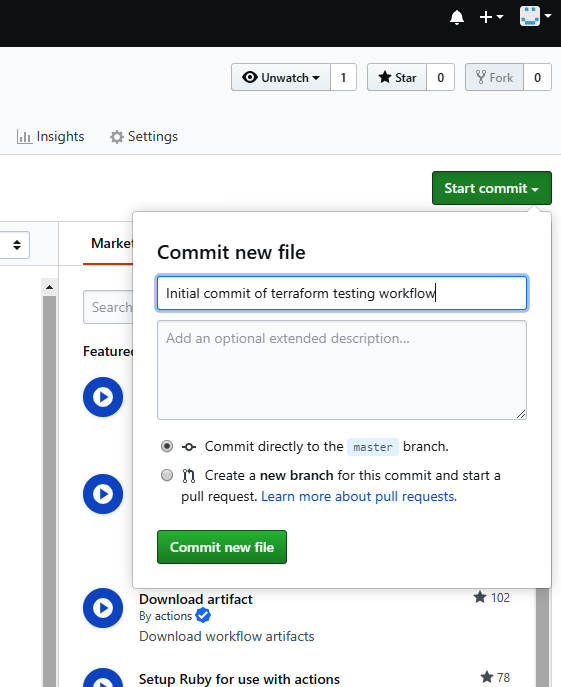
Chúng tôi không thể đưa hết mọi thứ mà một pipeline IaC CI/CD trong môi trường sản xuất nên có vào chương này. Cụ thể, chúng tôi đã phải lược bỏ bước kiểm thử tích hợp khỏi các hoạt động của pipeline. Tuy nhiên, chúng tôi đặc biệt khuyến nghị bạn nên nghiên cứu và triển khai một bước kiểm thử tích hợp cho mã Terraform của mình. Công cụ viết bằng Go là Terratest từ Gruntworks.io rất đáng để xem xét khi bạn bắt đầu đưa loại chức năng này vào.
Việc còn lại chỉ là thử workflow của mình để đảm bảo rằng nó chạy đúng như kỳ vọng.
Để kiểm thử pipeline mà chúng ta đã tạo, chúng ta sẽ cần kích hoạt trigger cho job mà mình đã định nghĩa. Trong trường hợp của chúng ta, điều đó có nghĩa là tạo một Git tag trong repository với nhãn bắt đầu bằng chữ v. Chúng ta có thể làm điều này trong giao diện web của GitHub bằng tính năng Releases. Nhưng vì phần lớn công việc sẽ được thực hiện bên ngoài GitHub trên máy trạm cục bộ, chúng ta sẽ tạo tag ở đó.
Điều đầu tiên chúng ta cần làm là cập nhật bản clone cục bộ của repository với những thay đổi mà mình đã thực hiện. Để làm điều đó, hãy mở một shell trên máy trạm và chạy lệnh git pull trong thư mục env-sandbox. Bạn sẽ nhận được kết quả tương tự Ví dụ 6-8, cho thấy chúng ta đã kéo tệp .github/workflows/main.yml mới về repository cục bộ.
env-sandbox msur$ git pull remote: Enumerating objects: 6, done. remote: Counting objects: 100% (6/6), done. remote: Compressing objects: 100% (3/3), done. remote: Total 5 (delta 0), reused 0 (delta 0), pack-reused 0 Unpacking objects: 100% (5/5), done. From https://github.com/msur/env-sandbox a6b706f..9923863 master -> origin/master Updating a6b706f..9923863 Fast-forward .github/workflows/main.yml | 54 ++++++++++++++++++++++++++++++++++++++++++++++++++ 1 file changed, 54 insertions(+) create mode 100644 .github/workflows/main.yml
Bây giờ khi đã đồng bộ với repository trên GitHub, chúng ta có thể tạo tag. Vì đây chỉ là một thử nghiệm, chúng ta sẽ gắn nhãn bản phát hành là “v0.1.” Hãy dùng lệnh git tag như trong Ví dụ 6-9 để tạo tag mới với nhãn đó.
env-sandbox msur$ git tag -a v0.1 -m "workflow test"
Mặc dù chúng ta đã tạo tag, nó hiện mới chỉ tồn tại trong bản clone cục bộ trên máy trạm. Để kích hoạt workflow, chúng ta sẽ cần đẩy tag này lên repository trên GitHub. Hãy dùng lệnh git push kèm theo tên tag để thực hiện việc đó, như trong Ví dụ 6-10.
env-sandbox testuser$ git push origin v0.1 Enumerating objects: 1, done. Counting objects: 100% (1/1), done. Writing objects: 100% (1/1), 165 bytes | 165.00 KiB/s, done. Total 1 (delta 0), reused 0 (delta 0) To https://github.com/mitraman/env-sandbox.git * [new tag] v0.1 -> v0.1
Chúng ta sẽ thực hiện chuỗi thao tác tạo tag và đẩy tag này mỗi khi muốn pipeline chạy. Việc đẩy tag lẽ ra đã kích hoạt workflow GitHub Actions mà chúng ta đã tạo, vì vậy bây giờ việc duy nhất còn lại là kiểm tra để chắc chắn rằng nó đã chạy thành công.
Để xem trạng thái của lần chạy, hãy quay lại giao diện GitHub trên trình duyệt và điều hướng đến Actions giống như trước. Bạn sẽ thấy một màn hình tương tự như Hình 6-14, cho thấy workflow job của chúng ta đã hoàn tất thành công.
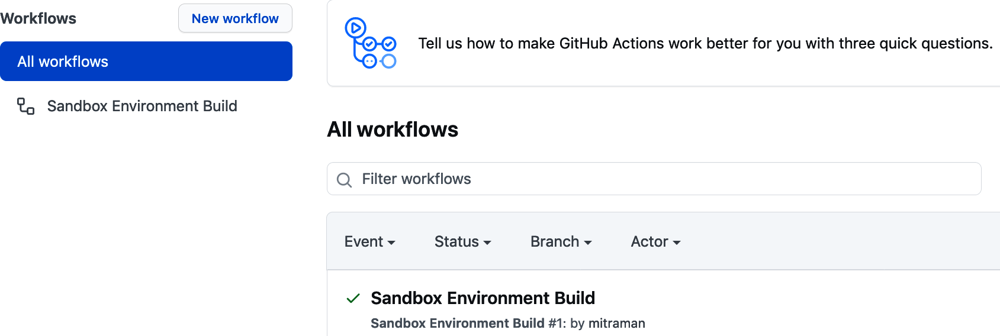
Bạn cũng có thể xem chi tiết hơn về job đã chạy. Điều này hữu ích nếu job của bạn không chạy như mong đợi và bạn cần xử lý sự cố. Để xem chi tiết job, hãy chọn workflow mà bạn muốn xem thêm thông tin (workflow của chúng ta tên là Sandbox Environment Build), sau đó chọn job (trong trường hợp này, job của chúng ta tên là build). Trong màn hình chi tiết, bạn sẽ có thể thấy điều gì đã diễn ra ở từng bước của job khi pipeline chạy (xem Hình 6-15).
GitHub Actions là một sản phẩm tương đối mới và GitHub thường xuyên thay đổi UI, nên các bước chính xác để đi tới màn hình này có thể đã khác đi vào lúc bạn đọc cuốn sách. Nếu bạn gặp khó khăn khi tìm tới phần hiển thị các bước của job, hãy tham khảo tài liệu GitHub.
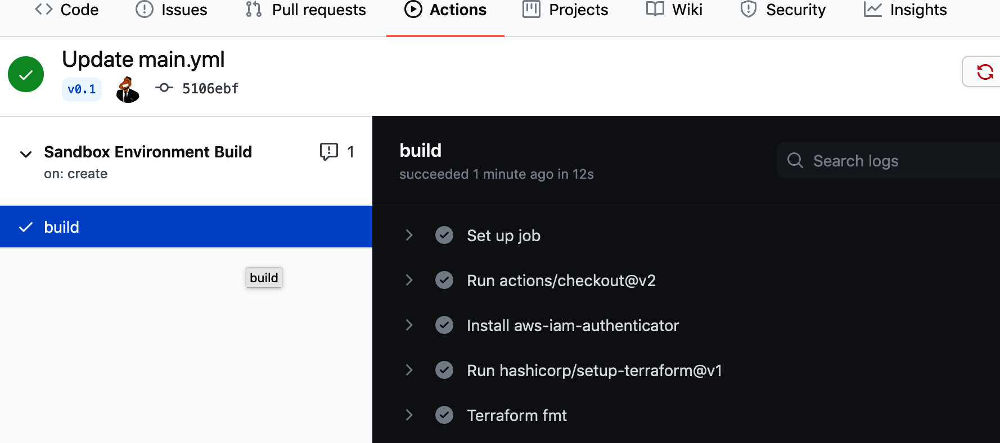
Khi pipeline đã được kiểm thử thành công, chúng ta đã hoàn tất việc thiết lập bộ công cụ cần thiết để xây dựng hạ tầng của mình theo cách khai báo .
Trong chương này, chúng ta đã thiết lập một pipeline IaC đơn giản nhưng mạnh mẽ, dựa trên một số nguyên tắc và thực hành DevOps quan trọng. Chúng ta đã cài đặt và sử dụng Terraform làm công cụ để hiện thực các nguyên tắc IaC và hạ tầng bất biến. Chúng ta đã thiết lập một repository mã trên GitHub để quản lý phần mã đó. Cuối cùng, chúng ta đã tạo một workflow GitHub Actions làm pipeline CI/CD với kiểm thử tự động nhằm cải thiện độ an toàn và tốc độ của các thay đổi hạ tầng.
Chúng ta chưa thực sự tạo ra bất kỳ tài nguyên hạ tầng nào, nhưng đã đi qua đầy đủ các bước để thực hiện một thay đổi hạ tầng. Chúng ta tạo và chỉnh sửa một tệp Terraform, kiểm thử và chạy nó cục bộ, commit nó vào repository, rồi gắn tag để khởi động một quy trình build và apply trong pipeline. Chuỗi bước này sẽ là phương pháp phát triển hạ tầng bất biến của chúng ta, và chúng ta sẽ sử dụng nó thường xuyên trong chương tiếp theo, nơi mình thiết kế và xây dựng hạ tầng microservices.